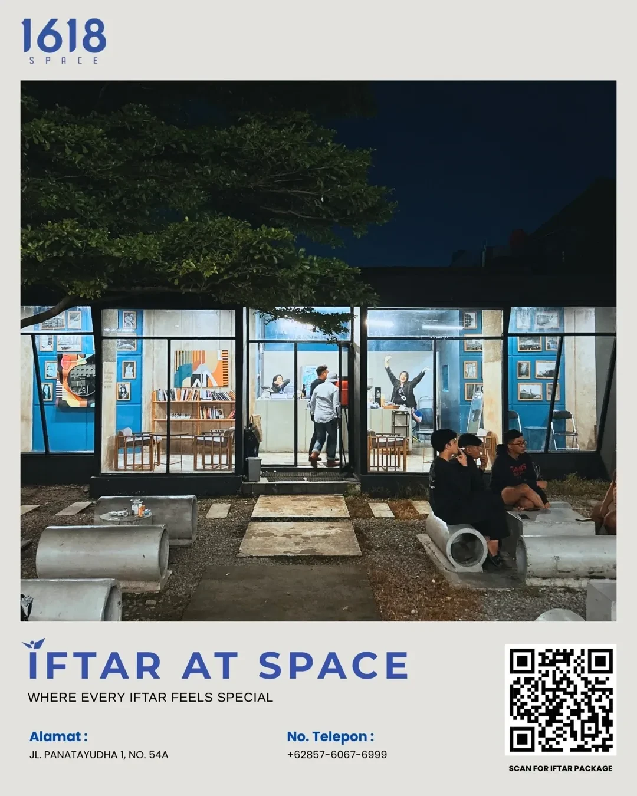

01
A refreshing pause
Something cold. A moment to slow down.
KARAWANG · FOOD & GOOD COMPANY
Coffee, good food, and a place to come together in Karawang. For everyday catch-ups, community moments, and your next gathering.

THIS IS 1618
From an afternoon outdoors to a catch-up inside, 1618 Space is a place to come together. Bring your friends, settle in, and stay a little longer.
Meet us on InstagramSOMETHING FOR THE TABLE
Refreshing drinks, a satisfying meal,
and a few bites to share.
What are you in the mood for?
Something cold. A moment to slow down.
Put it in the middle. Let everyone dig in.
For the days when a little bite isn't enough.
TAKE A LOOK AROUND
Blue walls. Colourful corners.
A seat inside or under the trees.
Welcome to 1618 Space.
A glimpse of our outdoor tables and blue-lit space.
Photo: @1618spaceidMake yourself at home inside.
Photo: Google MapsWhere your next little pause begins.
Photo: Maps / supianto sukriA look at our counter and indoor seating.
Photo: 1618 SpaceMORE THAN JUST SPACE
Community rides, match screenings, and moments around the table. Find the latest on Instagram, then message us for reservations and event enquiries.
View @1618spaceidAsk about reservations & eventsFollow the latest from @1618spaceid. If the preview doesn't load, open Instagram.
FROM GOOGLE MAPS
“Tempatnya enak untuk baca buku, hening dan bersih.”
“area outdoor-nya juga luas dan adem buat nongkrong sore ke malam.”
“Variasi minumannya juga cukup lengkap.”
COME BY OR SAY HELLO
Drop in for coffee, bring your friends, or talk to us about a gathering. Find the space on Maps or start a conversation on WhatsApp.
Jl. Panatayuda I No.54, Nagasari
Karawang Barat, Jawa Barat 41312
Monday–Thursday · 15:00–22:00
Friday–Sunday · 15:00–23:00